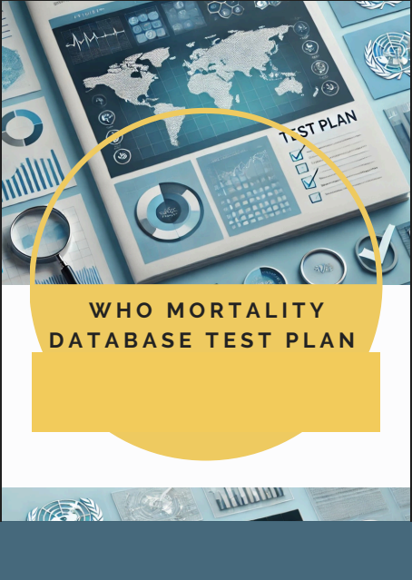

I build and evaluate systems where AI meets people.
I'm Nathan Cavender, an Information Science master's graduate focused on AI evaluation, human-computer interaction, data analysis, and practical systems that turn messy information into useful decisions.
M.S. Information Science, 2026
Focus
AI evaluation
Human-centered systems
Research & analytics
Projects with depth.
Applied AI, evaluation, UX research, and data work—from prototype architecture to measurement and analysis.
Erria — Physician Digital Twins for Market Research
A system for building calibrated, prompt-ready physician personas from structured onboarding, clinical vignettes, feedback, and behavioral data.

Structured Annotation & LLM Evaluation
AI-assisted transcript annotation, structured taxonomies, ground-truth comparison, precision/recall, fuzzy matching, and confusion-matrix analysis.

Task Tamer — AI Task Manager
A weekly planning prototype that schedules queued tasks around calendar events and pairs productivity with a pet/XP feedback loop.

WHO Mortality Database Usability Study
A formal usability evaluation using task success, efficiency, error analysis, think-aloud observation, surveys, and interviews.

Repository Usage Analytics
Data curation and analysis of repository visitor logs and download data to understand user behavior and support data storytelling.
Research, data, and operations.
Graduate Research Assistant · UNC–Chapel Hill
Built and evaluated an AI-assisted annotation platform for conversational transcripts and developed an LLM evaluation framework against human-labeled ground truth.
National Center for Data Services Intern · MIT Libraries project
Cleaned and analyzed DSpace repository usage data, working with visitor logs and downloads to understand system use and support stakeholder insights.
Construction & Design Assistant · Devlin Builders
Improved quote/proposal workflows in Excel, supported brand expansion, and implemented customer-feedback processes.
Information science, end to end.
My work sits across system design, research, implementation, and evaluation. I care about whether an AI system is measurable, understandable, and genuinely useful—not just whether it can produce an output.